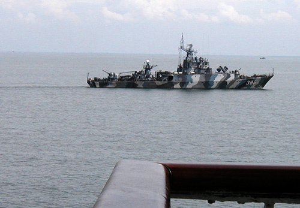
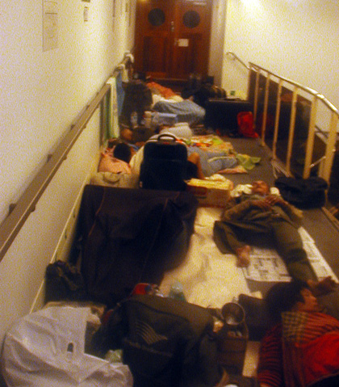
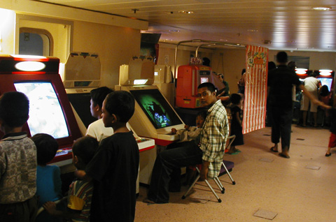
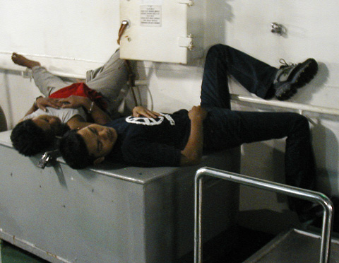
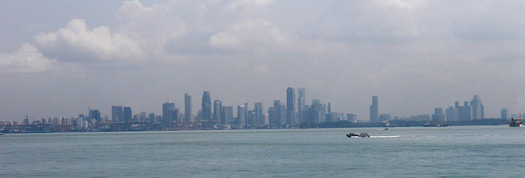

Indonesia Trav-E-Logs©
| Sumatra to Java
|
 |
| back: Bukit Lawang | Welcome sight while in pirate waters. |
================================= As luck would have it, a Pelni ship was heading from Medan on Sumatra to Jakarta on the island of Java the day after I returned from Bukit Lawang. Second and third class accommodations were sold out, but found several other westerners also traveling Ekonomi Klas to help with security. =================================
July 15 - 17, 2003
The Straits of Melaka (between peninsular Malaysia and Sumatra) is one of the busy sea lanes where piracy is on the rise. Travelers feel more comfortable when any sighting of a navy ship is made in these waters. Above is Indonesia's KRI Silas Papare (386) that would later be one of thirty Indonesian Navy ships assigned to help with the Sumatra-Andaman earthquake relief effort.
While boarding the Pelni ship, made friends with several westerners also heading to Jakarta, and one in particular was going to immediately catch a train for Yogya. The best part was that he lives in Indonesia, and knows the easy way to get to the train station from the Jakarta port of Belawan. After securing space on the deck for our stuff, made a quick tour of the ship to check out all the decks, and find the ship offices. It took a lot of convincing, but they gave me a complete Pelni schedule for 2003, as Pelni would be my home for at least four more legs of my journey.
If you are not amongst the first to purchase an "Ekonomi klas" ticket when they go on sale a month before departure, you most likely will not be assigned a bunk; when you board the vessel, find a place on the deck or along the passageways, and claim your territory.
| So what else does one do when on a ship for a day or two? If you can take the noise level, try the game room. Or the cafeteria/snack bar located on the back deck of each ship, where you can sit at a table and enjoy your food or drink to the pleasure of over-amplified rock music, while watching the wake of the ship fade out in the distance. This ship made a stop at an Indonesian island off the coast of Singapore, so we were able enjoy the Singapore skyline without the smog. Another environmental factor, water clarity, varied considerably from clear to polluted.  |
  |

Enjoy!
Bill
------------------------------
"Travel is Fatal to Bigotry, Prejudice, and Narrow-minded ness" .... attributed to Mark Twain
| next: Yogya |
| back: Bukit Lawang |